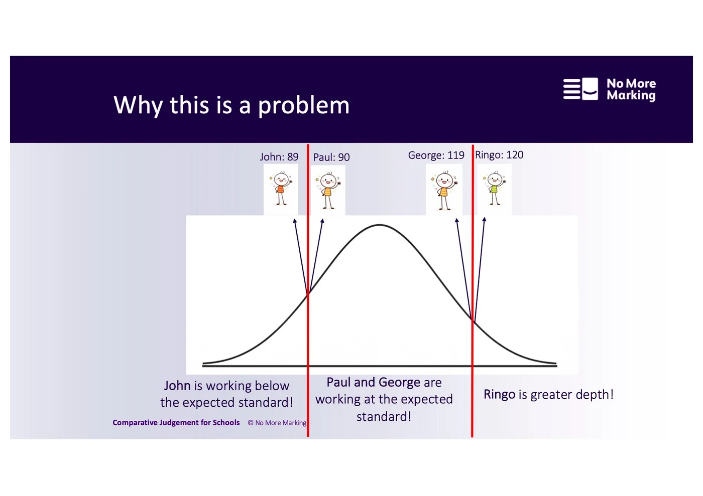
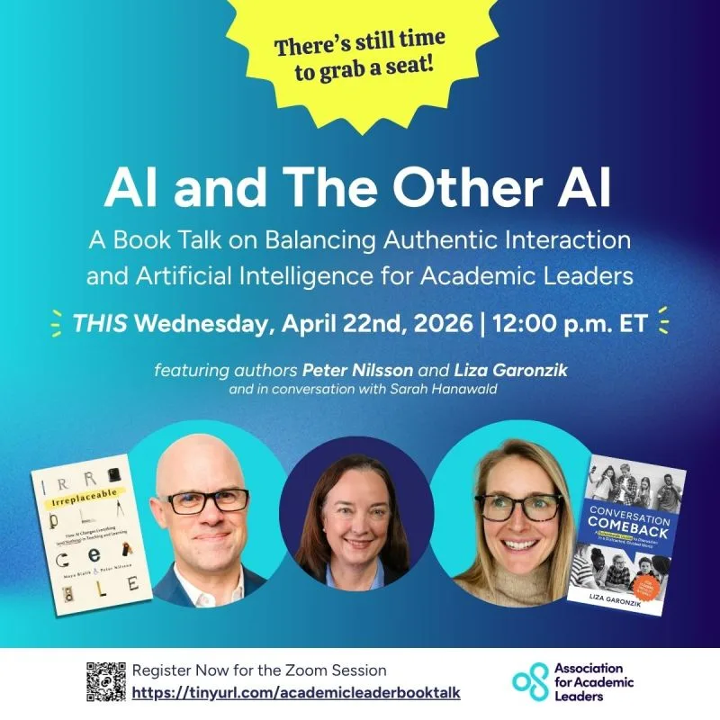
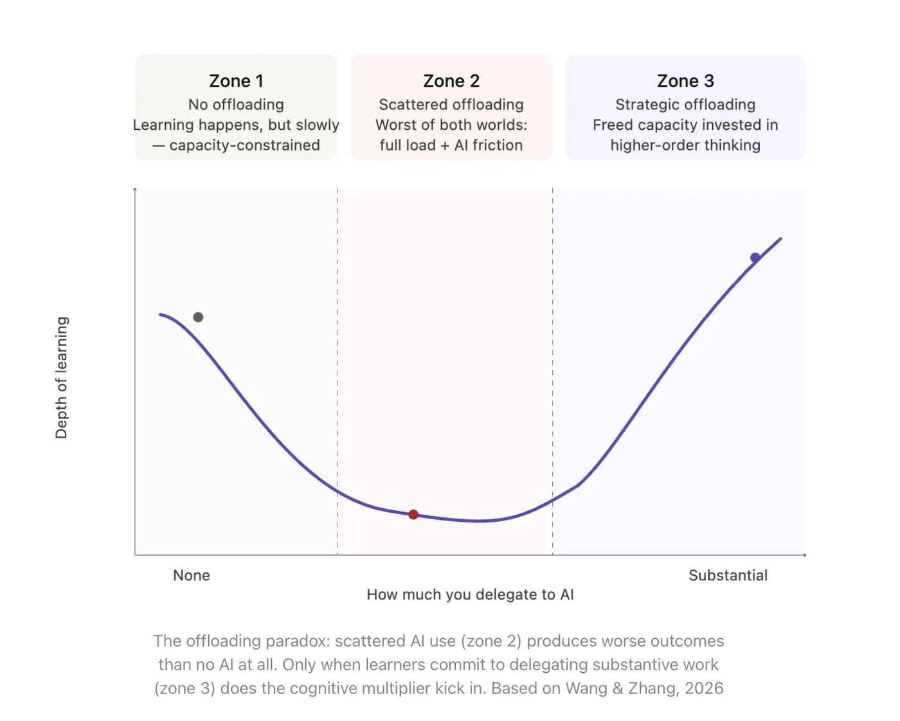

“6 Ways To Center A Paper Notebook”
“Paper notebooks are artifacts of a slower, more deliberate era—a fact that appeals to teachers struggling to get kids to focus, persist when the work gets hard, and be alone with their emerging thoughts.”
A weekly collection of education-related news from around the web.
← Previous Issue · Next Issue →
An excellent week!
In this week’s features, find an article about analog learning with paper and pen. AI is good for some things, paper and pen are good for others. Here are some reminders of the kinds of analog activities we used to use. Also in the features, find a New York Review of Books post about how we teach Algebra. Even more, the review catalogs four different books by a practicing teacher about how we can rethink math.
Elsewhere this week, look at a robust assessment section, two posts about the impact of varsity athletics, and a strong series of leadership posts.
Also as a reminder: tomorrow I’ll join Sarah Hanawald and Liza Garonzik for a discussion about balancing AI and AI. See the image below for more information, and you can register for free here.
These and more, enjoy!
Peter


“Paper notebooks are artifacts of a slower, more deliberate era—a fact that appeals to teachers struggling to get kids to focus, persist when the work gets hard, and be alone with their emerging thoughts.”
“Lockhart believes to his core that each of us is capable of that experience of appreciation, and like Churchill’s anonymous teacher, he wants each of us to be able to catch “a glimpse of something beautiful and pure, a harmless and joyful activity that has brought untold delight to many people for thousands of years.” As machines do more and more of the grunt work in our age of artificial intelligence, a deeper appreciation of mathematics’ intellectual artistry, and the opportunity to try it out, might be all we have left. Lockhart offers us a road to that end. Let the mending begin.”
“Varsity athletes have better attendance than other students out of season and still better attendance during their sports seasons… We find substantial, plausibly causal in-season effects showing that participation in structured, voluntary extracurricular activities improves attendance and demonstrating the role of student agency in showing up to school.”
“The moment I started talking, I saw students taking out their paper, their notebooks and pencils and pens. It was the first time this was happening in my class and I was elated.”
““The only thing crazier than this home invasion is her wicked ‘hahd’ accent,” one comment read. “This reporter could narrate ‘The Departed,’” read another. “I’m happy the CayreTakah is safe.” In an interview, Ms. Sweeney said, “I think I pronounce ‘caretaker’ fine, but apparently the rest of the world sees it differently.””
In the features this week, find a helpful history of the last six months of AI Agents: how coding agents in particular have developed, and how they have transformed the software engineering field. This is a real turning point that is coming for other knowledge work.
Also in the features, see the post by Dr. Philippa Hardman on the Cognitive Offloading Paradox. This is an important explanation of recent research that shows that learning with no delegation to AI is fruitful, that learning with a little delegation to AI is often destructive, but that learning with a lot of delegation to can be quite productive — under certain conditions. This is probably patently clear to those who use AI heavily to support their learning/work, but new to those who don’t. The key, of course, is having (or building) the skills to be able to use AI in this way.
Relevant to this is the recognition that perceptions of AI track with the degree to which people use AI. If people use it rarely or not at all, they are more likely to fear and resist AI. If people use it regularly or often, they are more likely to be excited about AI. The question is whether that is because of predispositions and this is simple sorting — or whether this is because people who use it more recognize the benefits. E.g. is it correlation or causation? See the Gallup survey in Uses and Applications for more.
Meanwhile, people are using AI more and more for emotional and personal support, and AI is pervading the workplace so much that some organizational directors are calling it a parallel or shadow workforce. We live in interesting times.
These and more, enjoy!
Peter

“The researchers call this the offloading paradox. Offloading can lead to better quality thinking and deeper learning — but only under two conditions: 1) Learners delegate enough to AI to genuinely free cognitive capacity, and 2) That freed capacity gets deliberately invested in higher-order work — questioning assumptions, critiquing frameworks, constructing original arguments (the kind of thinking AI can’t do for you).”
“There’s always been a knowledge overhang between the median experience of most historians and the AI frontier, but it’s become a chasm and I don’t think most people know what to believe or think anymore. Nevertheless, a consensus has formed in the AI community that we’ve crossed an important threshold beyond which everything will change. My sense is that if people have heard this, they’ve probably dismissed it as hype.”
“The speakers at the staff meeting weren’t school leaders or outside experts. They were nine 8th graders, who have spent the past year experimenting with the technology under the supervision of Ashley Kannan, a social studies teacher at the school... Students have perhaps the biggest stake in how AI literacy is taught, but often the least input into those decisions, noted Kannan… With the project, Kannan wanted to flip the script. What would students do if they could use AI to reach their own goals? What guardrails would they deem essential? The result was a group of teenagers who came away with their own nuanced assessments of the technology—and some advice for the adults in their lives.”
“Over the past four years I’ve joined some of best professional communities of my career, all forming around AI. I’m also seeing this technology dividing some of the communities I’ve belonged to for decades. Many others across higher ed are experiencing something very similar. Some of us are forging completely new, unexpected ties with peers we never knew existed, while also having somewhat fraught conversations with colleagues we’ve had been having coffee with for the past decade.”
“A growing field of computer science known as interpretability embodies the conceit that in order to narrow or even bridge the expanding knowledge gap between A.I. models and humans, we need to treat A.I. more like a natural phenomenon than a human invention.”
“Largely, the goal is to create the everything machine: A robot with a generalist brain that can take on any task, enter any environment, or interact with anything in the same way a human could. In that way, the race to build a working humanoid robot mirrors the race to build AGI and superintelligence. However, humanoids may just be the beginning.”
“Here we analyse over 500,000 de-identified health-related conversations with Microsoft Copilot from January 2026 to characterize what people ask conversational artificial intelligence (AI) about health… Nearly one in five conversations involves personal symptom assessment or condition discussion, and the dominant general information category is also concentrated on specific treatments and conditions, suggesting that this is a lower bound on personal health intent. One in seven of these personal health queries concerns someone other than the user, suggesting that conversational AI can also be a caregiving tool. Personal queries increase markedly in the evening and nighttime hours, when traditional healthcare is most limited. Usage diverges sharply by device: mobile concentrates on personal health concerns, while desktop is dominated by professional and academic work. A substantial share of queries focuses on navigating healthcare systems.”
“Employees report productivity gains with AI but not fundamental shifts in how work gets done.”
“When these personal agents are let loose in public workplace channels like Slack, a fascinating social dynamic emerges: they begin to mirror their human partners’ expertise and reputation within the company.”